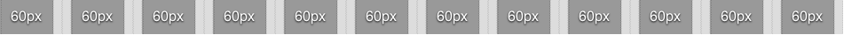

The purpose of this guide is to help Liferay front-end developers to code with similar methods and practices. This guide can be used for quick reference to learn the Liferay way.
Not all features will look great in all browsers, but we go by the principle "degrade gracefully", meaning that the functionality of the site is still in tact. For example CSS3 rounded borders won't display rounded in IE 6.
.png files that have transparency don't display correctly. In Liferay you can add the class of "png" to the element that has the transparent image and it may fix the problem, but use this method sparingly.
The second component of a web page is the presentation information contained in the Cascading Style Sheet (CSS). Web browsers successful implementation of CSS has given a whole generation of web authors site-wide control over the look and feel of their web sites.
Just as the information on a web page is semantically described in the HTML Markup, CSS describes all presentation aspects of the page via a description of it's visual properties. CSS is powerful in that these properties are mixed and matched via identifiers to control the page's layout and visual characteristics through the layering of style rules (the "cascade").
There can be confusion how to render the text based font-weight values
The Liferay website uses the 960 Grid System for all pages on the site. The 960 Grid System is an effort to streamline web development workflow by providing commonly used dimensions, based on a layout width of 960 pixels.
Each page layout is divided into 12 even portions. Each portion is 60 pixels wide with 10 pixels of margin on the left and the right, with all 12 portions filling the available 960px width of the layout. 
Makes more sense when you see it, right?
The page layout 960px was chosen for its size and divisibility. All modern monitors support at least 1024x768px of resolution, so 960px easily fits into this standard. The number of 960 is also a highly flexible base number, as it is divisible by 2, 3, 4, 5, 6, 8, 10, 12, 15, 16, 20, 24, 30, 32, 40, 48, 60, 64, 80, 96, 120, 160, 192, 240, 320 and 480.
A typical Liferay page layout will have a left column reserved for navigation. The left column will have a width of 220px, which is 1/4 the page layout. The remaining right column will have a width of 700px, which is 3/4 the page layout.
Strong typography forms the backbone of any brand identity; it is a major contributor to a brand's visual style and tone. Fonts are chosen with three key considerations: their fit with brand values, readability and flexibility of use. Limiting the number of fonts is key to maintaining a distinctive visual style and ease of brand management.
The Liferay website chose one font; Helvetica! ... which really meant Arial for Windows, which meant yet another sans-serif for everbody else. Whenever possible, the website uses Arial at 12px for all text on the site.
Headings are pretty simple - they are big versions of the regular text. The website gives all H1 elements a 2.5em font size with a 0.4em bottom margin, which equates to a 30px font size with a 12px bottom margin. The website gives all H2, H3 elements a 1.333em font size with a 0.375em bottom margin, which equates to a 16px font size with a 6px bottom margin. The website gives all H4, H5, H6 elements a 1.166em font size with a 0.428em bottom margin, which equates to a 14px font size with a 6px bottom margin.
Why didn't the Liferay website use straight-up pixels? The website uses pixels, but headings need flexibility. Word.
When a typographer refers to "the measure", they mean the width of the text body. Simply put, when copy is too wide or poorly spaced it becomes difficult to read.
The general rule for a comfortable measure is around 60 - 70 characters per line. Taking into account that each character averages out to around 0.5em in width, setting a measure of 33em should keep each line within the optimum range. Since the Liferay website defaults to a 12px Arial font, we would desire a number close to 396px (33 * 12). The closest and most ideal layout portions for the text body are therefore 5/12 (380px) and 1/2 (460px).
The Liferay website references color names by Resene Paints Ltd. as matched by the Name That Color website.
Today's audience can choose from quite a large pool of web browsers, each providing a slightly (or dramatically) different experience. As developers, it is our responsibility to choose just how the web pages we build are displayed to those users. This section describes how we, at Isobar, make some of these key decisions.
#set($foo = 1)
#if($foo == 1)
Foo is equals 1
#else
Foo does not equal 1
#endOutput: Foo is equals 1
#set($var = 1)
#set($foo == 2)
#set($total = add($var,$foo))
$totalOutput: 3